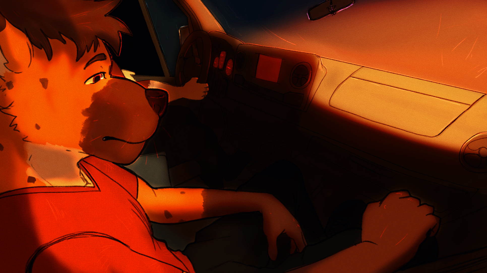

Sinopsis
Aquí va la descripción de tu proyecto 'Cycles'. Explica la trama principal, el conflicto y el viaje emocional de los personajes.
Características Principales
- Historia Centrada en los Personajes: Explora las complejas dinámicas entre los protagonistas.
- Arte Estilizado: Un estilo visual único que da vida al mundo del juego.
- Narrativa Emotiva: Una trama que toca temas de arrepentimiento, amistad y amor.
Galería de Arte
Mi trabajo en este proyecto se centró en la creación de los sprites de personaje y CGs clave.
CGs (Escenas Clave)


Diseño de Personajes
Cada personaje cuenta con una serie de expresiones para reflejar su personalidad en la historia.
Leo

Diego

Tanner

Detalles del Proyecto
- Mi Rol: Artista (Sprites y CGs)
- Género: Fanwork, Drama, Boys' Love (BL)
- Herramientas: Clip Studio Paint, Photoshop (Arte)
Ver el Proyecto Original
Este es un proyecto de fans. Puedes ver el trabajo original en el siguiente enlace.
Ver en Itch.io